Profili di moto polinomiali
La legge di moto è un polinomio del quinto grado.
Si vogliono determinare le condizioni al contorno limite che producano un profilo di moto:
1) senza inversione di velocità
2) senza diminuzioni di velocità
3) con velocià sempre compresa tra quella iniziale e quella finale
Sotto le ipotesi non restrittive
0≤x≤1,
dy > 0, fattore di forma (dx = 1)
m0≥0, m1≥0, m1>m0
si trova:
1) 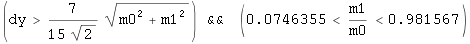 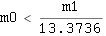
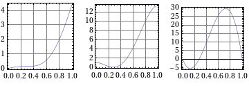
2) 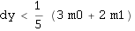
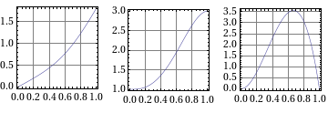
3) 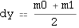
Codice
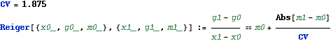
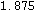
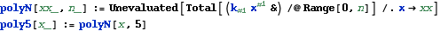
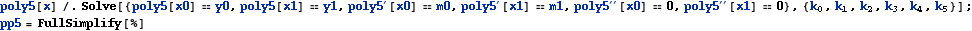
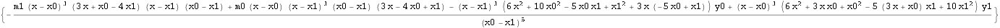
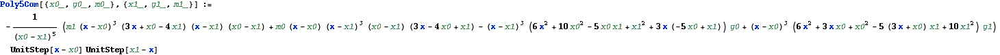
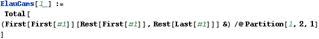
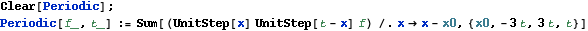
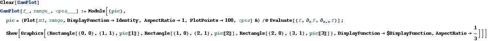
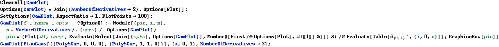
Vincoli
Lo scopo è di ottenere una relazione semplice tra dy, m0, m1 tale che i vincoli seguenti vengano rispettati
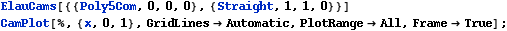
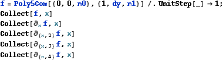
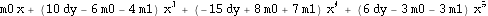
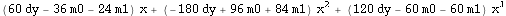
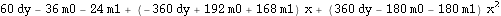
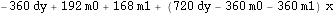
Valgono le ipotesi:
0≤x≤1,
dy > 0, fattore di forma (dx = 1)
m0≥0, m1≥0, m1>m0
1 Vel≥0, ma può superare m1
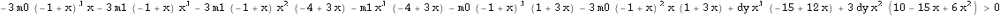
Se Esiste un minimo nell'intervallo x ε (0, 1) 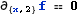
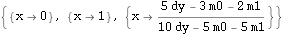
Infatti l'accelerazione ha la forma di un polinomio di terzo grado con due zeri agli estremi.
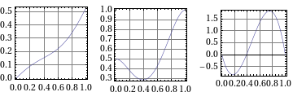
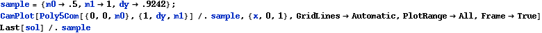
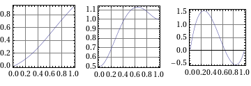
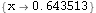
Il terzo zero,se esiste nell'intervallo può individuare un massimo o un minimo.
Nel caso sia un massimo troviamo una sovraelongazione della velocità, situazione spesso utile, comunque accettatta sotto qeuste ipotesi.
Nel caso sia un minimo, f''' > 0, imponiamo che questo sia positivo.
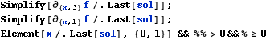
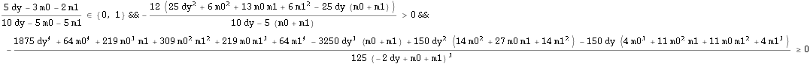
I
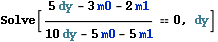
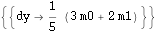
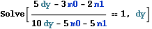
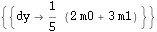
II
Numeratore:
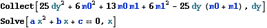
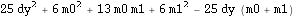
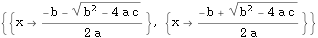
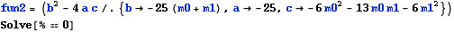
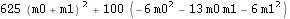
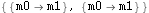
Il determinante dell'eq è sempre positivo, si annulla per m0 == m1, dando la soluzione banale dy = m.
La convaità è positiva, gli zeri sono:
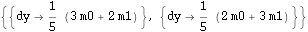
Denominatore:
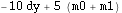
Il denominatore è positivo se
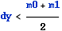
Per cui il numeratore è positivo per dy esterno all'intervallo 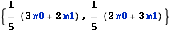
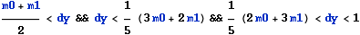
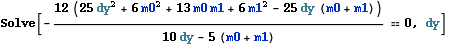

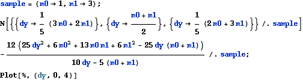
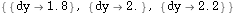
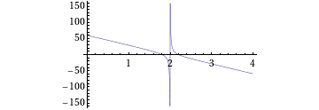
In conclusione la derivata terza è positiva se
In particolare per la velocità presenta un minimo, per questo diventa un massimo, all'interno dell'intervallo il minimo cade al di fuori del dominio (0,1)
La soluzione va cercata quindi per e vel > 0 come l'ultima delle condizioni (III).
III
Per cui il vincolo più restrittivo è
Il ruolo interscambiabile che assumono m0 ed m1 suggerisce che la funzione g riveli piì informazioni se rappresentata in coordinate polari
Le due figure mostrano come la funzione g sia lineare in ρ, infatti

che non si semplifica un gran che, conviene lavorare con α.

Approssimazione:
, ovvero
2 Vel≥m0, ma può superare m1, è caso più frequente
I e II
Vedi sopra
III
Il vincolo più restrittivo è quello più vicino all'origine 

3 m0≤Vel≤m1, inoltre Acc >= 0 presenta un massimo in x ε (0, 1), la Acc massima è la minima possibile
La poly5 diventa una poly4